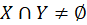

Raporturile de concordanță se caracterizează prin prezența a cel puțin unui element comun în cele două mulțimi X și Y de obiecte denotate. Cel puțin un obiect din X este și în Y, și cel puțin un obiect din Y este și în X.
Folosind limbajul matematic, putem spune și că reuniunea dintre X și Y este diferită de mulțimea vidă:

Raporturile de concordanță se împart în raporturi de identitate, raporturi de incluziune și raporturi de intersectare.
Raportul de identitate
În raportul de identitate, extensiunile a doi termeni se suprapun perfect sau, cu alte cuvinte, doi termeni se aplică acelorași obiecte.
Cele mai bune exemple sunt sinonimele (vorbire, grai, spusă, zicere; deștept, inteligent, isteț, ager) sau termeni de genul Mihai Eminescu și „autorul poeziei Floare albastră” (termen care se referă tot la Mihai Eminescu), Neil Armstrong și „primul om ajuns pe Lună” (termen care se referă tot la Neil Armstrong). De asemenea, există raport de identitate între un termen dintr-o limbă și traducerea lui în altă limbă: între măr în limba română și apple în limba engleză, între writer în limba engleză și écrivain în limba franceză.
Pe baza diagramei Euler putem spune că: „Toți X sunt Y” și „Toți Y sunt X”.
Raportul de incluziune (ordonare)
Acest raport apare atunci când toate obiectele din extensiunea unui termen aparțin și extensiunii unui alt termen, însă al doilea termen are și obiecte suplimentare. Așadar, spunem că extensiunea termenului X este inclusă în extensiunea termenului Y, iar termenul Y are o extensiune mai mare decât termenul X. Y îl poate include pe X, însă reciproca nu e valabilă.
Cu alte cuvinte, raporturile de incluziune stau la baza relației dintre gen și specie (întotdeauna, extensiunea speciei va fi inclusă în extensiunea genului). Din punct de vedere intensional, lucrurile se vor inversa, așa cum am explicat mai sus, intensiunea genului va fi cuprinsă în intensiunea speciei. Acele elemente din intensiunea speciei care nu se regăsesc și în intensiunea genului se numesc diferență specifică.
Termenul cu extensiunea mai mică, în cazul nostru X, se mai numește și termen subordonat sau specie. Termenul cu extensiune mai mare, în cazul nostru Y, se mai numește și termen supraordonat sau gen.
Dacă termenul supraordonat este imediat supraordonat, deci nu există un alt termen intermediar, îl numim gen proxim.
De exemplu, termenul de pălărie este genul proxim pentru pălărie de paie, iar pălărie de paie este genul proxim pentru pălărie de paie neagră.
Termenul de pătrat are două genuri proxime posibile, el fiind un caz special și de dreptunghi (dreptunghiul cu toate laturile egale) și de romb (rombul cu un unghi de 90̊). Deși pătratul este și un poligon sau un patrulater, acestea nu reprezintă genuri proxime, pentru că dreptunghi sau romb se subordonează lor și sunt supraordonate pătratului.
De exemplu, există un raport de incluziune între: pătrat și figură geometrică, oaie și mamifere rumegătoare, Mega Image și Delhaize Group.
Pe baza acestei diagrame Euler putem spune că: „Toți sunt X sunt Y”, „Unii Y sunt X”, „Unii Y nu sunt X”.
Raportul de intersectare (încrucișare)
În raportul de intersectare, extensiunile celor doi termeni au cel puțin un element în comun, fără ca o extensiune să fie cuprinsă în cealaltă. Deci, doar o parte din extensiunea celor doi termeni este comună și fiecare din termeni se referă și la obiecte pe care celălalt nu le are în vedere.
Exemple: profesor și doctor, copil și slab. Există profesori care sunt și doctori, însă nu toți profesorii sunt doctori (se aplică și viceversa).
Pe baza acestei diagrame Euler putem spune că: „Unii X sunt Y”, „Unii X nu sunt Y”, „Unii Y sunt X”, „Unii Y nu sunt X”.